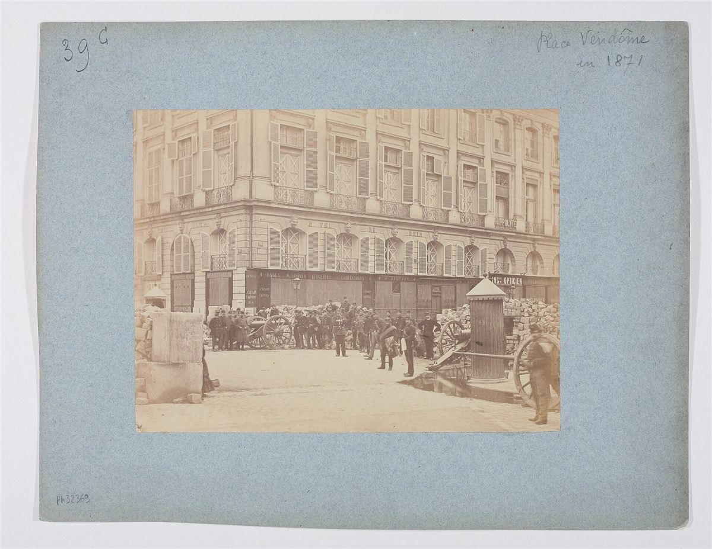

Deux pouvoirs nés d'en bas

La Commune repose sur deux piliers. D'un côté, la Garde nationale : les habitants en armes, organisés par bataillons de quartier, élisent leurs officiers et se fédèrent dans un Comité central. De l'autre, le Conseil de la Commune, élu le 26 mars par les vingt arrondissements, qui fait les lois et les applique à travers des commissions.
Des principes nouveaux
- Révocabilité : les élus sont responsables devant leurs électeurs et peuvent être révoqués.
- Salaire d'ouvrier : par décret du 2 avril, aucun traitement public ne peut dépasser 6 000 francs par an.
- Pas de séparation des pouvoirs : le Conseil fait les lois et les exécute lui-même par ses commissions.
- Les étrangers sont citoyens : le Hongrois Léo Frankel dirige la commission du Travail, le Polonais Jarosław Dąbrowski commande des troupes.
- Fédéralisme : la Déclaration au peuple français du 19 avril réclame l'autonomie de chaque commune de France, librement fédérées entre elles.
Les clubs et les quartiers
Dans les églises réquisitionnées le soir, dans les préaux, les salles de bal, des clubs réunissent chaque jour des centaines de personnes. On y discute des décrets, on interpelle les élus, on propose. Les comités d'arrondissement et les comités de vigilance organisent ravitaillement, logement et défense du quartier. C'est là que la Commune est la plus directe.
Le travail : vers les ateliers coopératifs
La commission du Travail et de l'Échange, animée par des membres de l'Internationale, s'appuie sur les chambres syndicales ouvrières. Le décret du 16 avril leur confie le recensement des ateliers abandonnés par les patrons partis à Versailles, pour les remettre en marche sous forme de coopératives ouvrières.
Majorité et minorité
Le Conseil se divise. La majorité, jacobine et blanquiste, veut un pouvoir fort pour gagner la guerre et crée le 1er mai un Comité de salut public, par 45 voix contre 23. La minorité, proudhonienne et internationaliste (Varlin, Frankel, Courbet, Vallès…), dénonce une dictature qui trahit le mandat des électeurs. Les anarchistes y verront plus tard une leçon : un pouvoir révolutionnaire centralisé étouffe la révolution qu'il prétend défendre.
À retenir
- Des élus révocables, payés comme des ouvriers.
- Les quartiers, les clubs et les syndicats comme lieux de pouvoir réel.
- Suite : les décrets, les femmes et l'héritage.
Sources et pour aller plus loin
Lire
- L'Imaginaire de la Commune, Kristin Ross, La Fabrique, 2015.Ce que la Commune a inventé : le « luxe communal », l'éducation, la fédération.
- La Commune de Paris, KropotkineNotre fiche : les leçons tirées par les anarchistes dix ans plus tard.
- La Commune et la notion de l'État, BakounineNotre fiche : ce que Bakounine écrit juste après la Semaine sanglante.
- La Guerre civile en France, Karl Marx, 1871.La lecture marxiste de la Commune, à comparer avec celle des anarchistes.
Sur le web
- Eugène VarlinL'ouvrier relieur, coopérateur et internationaliste, fusillé le 28 mai 1871.
- La Première InternationaleL'organisation dont beaucoup de communards étaient membres.
Dossier rédigé par Mamie Commune à partir de travaux d'historiennes et d'historiens et de textes des mouvements concernés. Libre de reproduction.